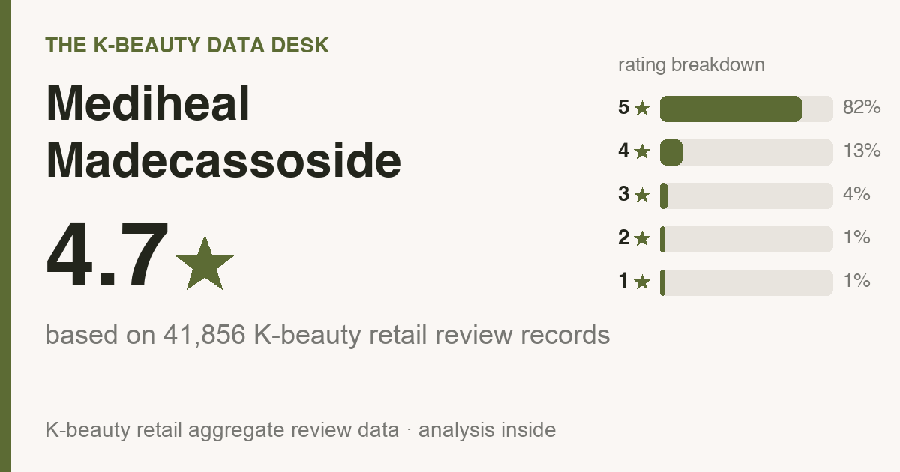
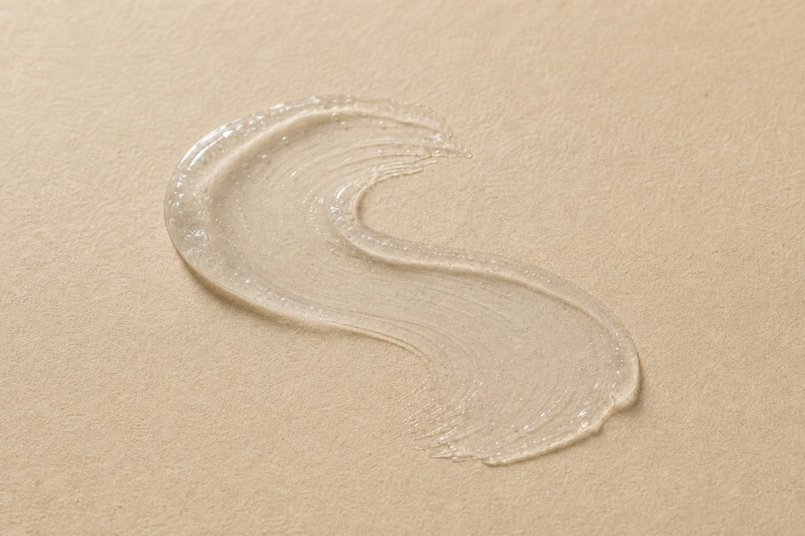
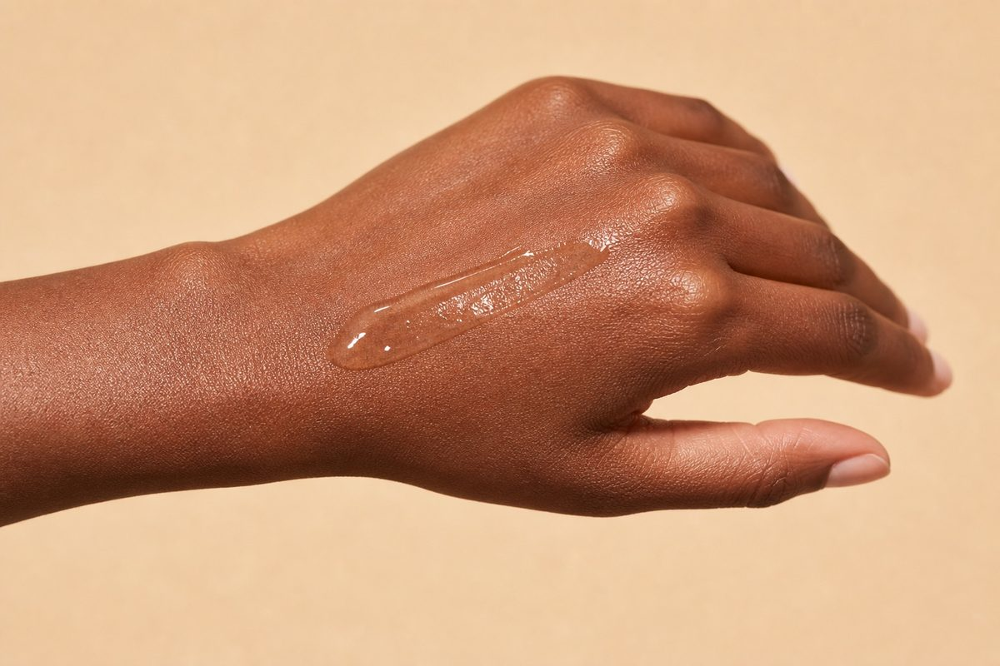

Updated July 2026. I pulled all 41,856 Olive Young reviews and read 500 of them line by line, so this is the crowd talking, not me freestyling. Every one is a real buyer. I didn't write, buy, or translate a single one.
Housekeeping: the store links at the bottom are affiliate links, so I might make a small commission if you buy through one. Costs you nothing extra, and it has zero pull on what the numbers say.

The 10-second version: 4.7★ across 41,856 Olive Young reviews, with 82% handing over the full five stars. Buyers rank it highest for soothing redness (62%) and hydration (34%). It's a combination skin darling (the full who-should-skip rundown is further down).

In Korea it sits around ₩22,900 (≈ $17). US pricing bounces around, so trust the buy links for today's number. What actually sold me: 22% of reviewers said they bought it again. Solid, not rabid. People are content, but not many are refilling the second the bottle runs dry. I'd shelve it as a nice-to-have upgrade, not a can't-live-without staple. A plain soothing serum handles the core job for less, so your extra money here buys texture and finish, nothing more.
Context, fast. Mediheal Madecassoside Blemish Repair Serum is a top-seller on Olive Young (think Korea's Sephora), but search it in English and you get almost nothing, maybe one TikTok that tells you zilch. So I went into the reviews and pulled the parts a friend would actually tell you before you spend.
The average sits at 4.7 stars, and it isn't a few loud superfans yanking it up. 82% gave the full five stars (almost 4 in 5), and 95% landed at four or five.
Sort by sentiment and 85% read positive. On a pool this size, that's strong, and it usually means steady, repeatable results instead of a one-week viral spike.
Read enough of them and the same notes repeat. What people love: soothing comfort and instant hydration.
So what's it genuinely good at? The tallies:
Star ratings are just the headline. The part that tells you whether to buy hides in the body text, so I read the 500 most-helpful reviews and counted what people kept repeating. One math note: the deeper numbers in this section come from those 500, while the star ratings and skin-type splits above pull from the full review base. What stood out:
Across the 5-star reviews, the phrases that surface over and over are hydration & dewiness, irritation / reactivity, soothing / redness, and fast absorption / fresh finish.
If your skin flares at everything, this section outranks any star rating. Of the people who brought it up, 72% said it felt gentle with zero sting, and just 1% reported any irritation at all. That's about as reassuring as review data gets. Still, your face is your face, so patch-test on your jaw for a couple of days before you go all in.
The review pool skews combination (58%), then dry (29%), then oily (13%), so that's whose skin these reviews actually describe (it leans combination skin). Match that and you're reading the most relevant crowd. Don't match it and it can still work for you, there are just fewer reviewers with your skin type, so weight what you read accordingly.
A genuine yes if:
Who I'd wave off (or at least send in eyes-open):
Nothing suits everyone. If this isn't the job you're shopping for, here's the category I'd point your money at, with rough US prices so you know the budget going in:
Treat those as research leads, not ranked picks. I only put my name on a product after reading its reviews the way I read these, so go check them yourself and match on results first, price second.
I read reviews, not the lab sheet, so I can't verify the fragrance status here (I read reviews, not the INCI). The 30-second check that actually settles it: on the buy page, Ctrl/Cmd-F the ingredient list for “fragrance / parfum” and “alcohol denat.” If either shows up and your skin reacts to it, skip. Reviewers called it gentle, but for reactive skin the label is your real answer, not a star rating.
Layering order trips people up, so here's the no-nonsense version for a serum like this:

Strong match. Combination was the single biggest group at 58% of reviewers, so if that's your skin, the odds tilt your way.
Mostly yes. 72% of reviewers said it felt gentle with no sting, and the irritation rate is genuinely low. Still patch-test if you react to everything.
Reviewers call it fast-absorbing and fresh, not greasy, so the glow reads as dewy hydration rather than a heavy sheen. One honest gap: this is a Korean review base, so it can't tell you how that finish lands on deeper skin tones specifically, and I'm not going to invent a verdict the reviews don't hold. Do this instead: press a couple of drops into one cheek, then check it in daylight AND in a flash selfie before you commit. A dewy formula can read shiny on any tone under a flash, so the only honest answer is watching how it behaves on your own skin.
Honestly, probably not. Normal skin will like it but won't need it, and if the serum you own already works, this won't change your life. It's a genuinely good one if you're starting fresh or replacing something you don't love, but “I already have one that works” is a perfectly good reason to skip.
The real tell is whether people come back, not the buzz. 22% said they repurchased and 46% reviewed after a month or more of use, and the strength they name most often is soothing redness (62%). The repeat-buyers back that up.
It's one of the better-reviewed picks in its category, and the steady re-buying says people feel it earns its spot. It's worth it when its top reviewer-voted strengths line up with what your skin actually needs, and you're not buying it for the hyped actives.
I read the reviews, not the ingredient list, so I can't confirm fragrance status. If you're fragrance-sensitive, patch-test on your jaw for 24–48h first.
No invented dupes here. I only vouch for something once I've read its reviews the way I read these, so shop the same category by what reviewers say it does best, then compare price.
Amazon is easiest (it auto-routes to your local store), and Olive Young runs its own US store (us.oliveyoung.com) now too. YesStyle and Stylevana are solid value alternates. Outside the US, Olive Young Global ships to the UK, Canada, Australia, Singapore and more. Links are below.
Mediheal Madecassoside Blemish Repair Serum is an easy yes for combination skin chasing soothing redness and hydration. For the job it's actually built to do, people are clearly happy with it. If that's your lane, and you don't already own a serum you love, it's a confident yes from me.
And it's not just honeymoon love. 46% of the reviews I read landed after a month or more of use, so people don't cool on it once the novelty wears off.
Not your match? Here are other reviews I built the exact same way, all the numbers and who-should-skip included:
Disclosure: This article contains affiliate links. If you buy through them, I may earn a small commission at no extra cost to you.
If you're in the US:
Outside the US (UK, Canada, Australia, Singapore, NZ and more):
On prices: the only number I can vouch for is the dated Korea shelf price above (pulled 2026-07-03). Stores reprice constantly and bundles muddy comparisons, so always compare the per-item price at the link before you buy.
← All K-Beauty Data Desk reviews · Best-seller rankings · About & methodology
Published by The K-Beauty Data Desk · Data refreshed 2026-07-05. The reviews are 100% real Olive Young buyers. I read the reviews and made sense of them for you; I never wrote, bought, paid for, or translated any individual review, and I did NOT test the product on my own skin. I received no free product and am not paid or approved by the brand. Check the source ratings yourself.
Data basis: aggregate statistics from Olive Young Korea, retrieved 2026-07-05. The ratings, review count, star distribution and satisfaction polls are all facts pulled in aggregate. The wording, decoding and recommendations are mine. I never copy or translate individual user reviews.